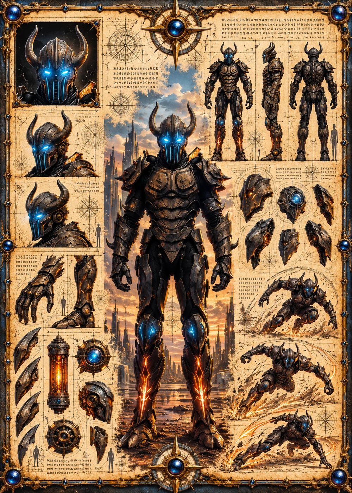

©
©
GENEZYS ARCHIVE · Earth 1 · Legionnaire
Yex
Oblivion Reclaimer

Archive record
Yex reclaims whatever the void tries to take. The Annihilation Pulse sends a wave of erasure through the enemy line, piercing the center and striking the flanks. The Marauders say that whatever crosses the edge of the north, Yex sends back.
Combat signature
Annihilation Pulse
150 Cosmara
220 Animus
260 Vitalis
Sends wave of complete erasure: Deals 100 pierce damage to the enemy in the middle and 60 damage to enemies on the edges.
Genezys 09:06 ™&©2026LEGIONS
